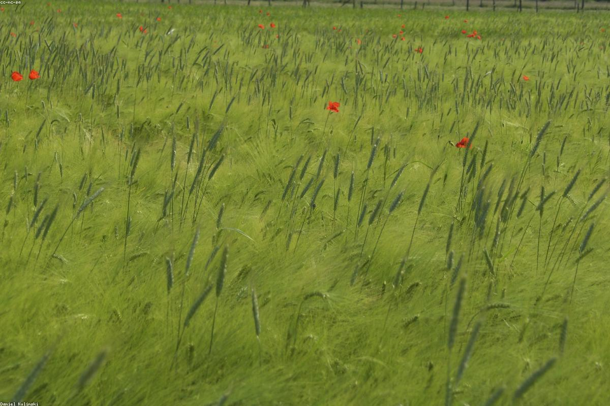
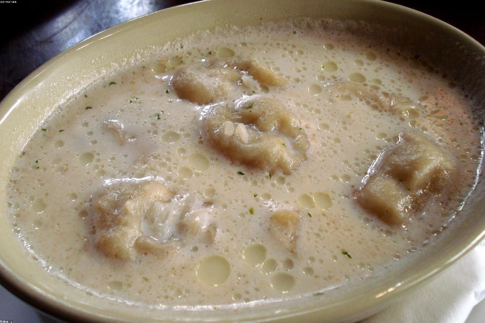

Нижній Новгородъ · Рождественская, 40
Щи да каша, расстегаи изъ печи и медовуха въ запотѣвшихъ кружкахъ. Русское застолье въ благородномъ прочтеніи — тепло, основательно, отъ души.
О мѣстѣ
На Рождественской, въ домѣ съ толстыми стѣнами и сводами, мы заново открыли русскій трактиръ — такой, какимъ его знали гости купеческаго Нижняго. Тяжёлые столы, тёплый свѣтъ лампадъ, духъ хлѣба изъ печи и неспѣшный разговоръ за самоваромъ.
Мы не играемъ въ старину — мы её бережёмъ. Рецепты собирали по деревнямъ и старымъ поваренымъ книгамъ, а подаёмъ ихъ ясно и благородно: ничего лишняго, только честная русская кухня и хлѣбосольство, отъ котораго тепло на душѣ.


Отзывы гостей
«Щи суточныя — то, за чѣмъ возвращаешься. Атмосфера такая, будто попалъ въ гости къ хлѣбосольной роднѣ. Медовуха отдѣльный поклонъ.»
«Водили иностранныхъ гостей — все въ восторгѣ. Расстегаи, уха, настойки. Сервисъ внимательный, цѣны честныя. Лучшій русскій столъ въ городѣ.»
«Отмѣчали юбилей въ большомъ залѣ. Гусь съ яблоками — праздникъ! Тепло, красиво, по-русски основательно. Спасибо за вечеръ.»
Какъ добраться
Контакты
Рождественская, 40
Нижній Новгородъ, 603001
Пн–Чт · 12:00 — 23:00
Пт–Сб · 12:00 — 01:00
Вс · 12:00 — 23:00
Для большихъ застолій и банкетовъ — бронируйте заранѣе.
Позвонить и забронировать